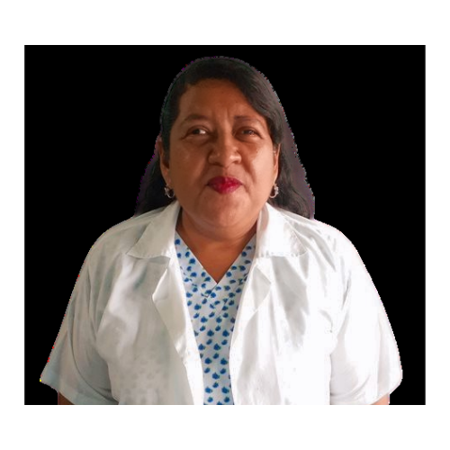
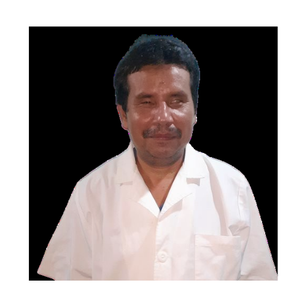
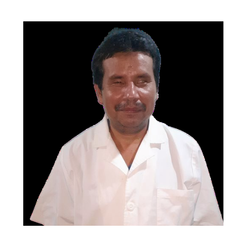

A la edad de 11 años perdí mi visión a causa de un dolor de cabeza, por consiguiente, la idea de mi futuro cambió definitivamente; sin embargo, Dios se manifestó dándome un camino nuevo y fue allí cuando conocí otras alternativas, empecé a ir a la escuela de rehabilitación para Ciegos Eugenia de Dueñas.
Recibí cursos para poder desarrollarme a través de diversas capacitaciones y aprender cómo iba a lograr desempeñarme en un trabajo el resto de mi vida. Aprendí adiestramiento manual, movilidad, educación para el hogar y el sistema braille. Este resultó siendo un valioso tesoro porque me permitió poder incorporarme a mis estudios.
Luego se me capacitó en el masaje y lo que aprendí de manera profesional ya que me gustó mucho porque usar mis manos para la salud de los demás, me emociona poder brindar esa relajación muscular y aliviar dolencias. Todo este recorrido me llevó a ser una terapista que se siente feliz cuando puede brindar esa ayuda a través de sus manos.

Esta iniciativa nació como un negocio familiar que pretende impactar en la salud y bienestar de sus pacientes.
Tenemos 15 años de brindar servicios de masaje y quiropráxia. Los masajes que brindamos son los siguientes ya sea en la clínica o a domicilio:
- Relajante/Terapéutico
- Quiromasaje/ Masaje circulatorio
- Masaje descontracturante
- Quiropráxia general
- Masaje Magnético sedante
- Masajes reflexológicos
- Aromaterapia (se realiza en masajes relajantes y combinados)
 

Mi deseo de superación empezó a la edad de 10 años, por ello, me dediqué a lo largo de mi vida a vender diferentes productos medicina natural y química y artesanías.En 2002 perdí la vista totalmente, este fue un momento muy difícil y me llevó a una crisis emocional muy fuerte, sin embargo, el deseo de salir adelante demostrando mis capacidades, me llevó a regresar a emprender.
Para lograr adecuarme a las exigencias del mundo adulto sin mi sentido de la vista asistí a la rehabilitación en la escuela de ciegos. En ese lugar aprendí de ventas, mercadeo, música, matemáticas, comunicaciones, masaje, radio, cómo hacer actividades diarias, adiestramiento manual, escritura y lectura con el sistema braille, movilidad computación y mecanografía. En los siguientes años me dediqué a estudiar y practicar como terapeuta.
En 2011 realizamos con mi esposa el lanzamiento de una clínica de masajes en Apopa, pero por dificultades de asesoría tuvimos que moverla a nuestra casa.